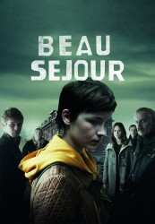

Alternativ: Hotel Beau Séjour (Englischer Titel)
 
 IMDB-Wertung: 8.1 / 10
IMDB-Wertung: 8.1 / 10  Metascore: 0
Metascore: 0 
Kato Hoeven hat ein Problem: sie ist tot. Als Geist versucht sie, ihren eigenen Mord aufzuklären, was sich als schwierig erweist, wenn niemand von den Lebenden sie sehen oder hören kann. Doch ist das wirklich so? Nach und nach erkennt Kato, dass es sehr wohl Menschen gibt, die sich ihrer Präsenz bewusst sind, manche davon kennt sie persönlich, andere nicht. Bei ihrer Suche nach der Wahrheit lüftet sie so manches Geheimnis, welches sich unter der Oberfläche ihres eigentlich doch angeblich so friedvollen Heimatdorfes befindet …
Jahr: 2016
Dauer: 49 Minuten
FSK:
Land: Studio: EénTonspuren:
Untertitel:
Auflösung: 720p (1280x720) Größe: 872 MB
Genre: Drama, Krimi, TV-Serie
Regisseur: Nathalie Basteyns, Kaat Beels
Drehbuch: Chiyomaru Shikura
Soundtrack:
Darsteller:
- Lynn Van Royen als Kato Hoeven
- Inge Paulussen als Kristel Brouwers
- Kris Cuppens als Luc Hoeven
- Katrin Lohmann als Marion Schneider
- Joren Seldeslachts als Charlie Vinken
- Charlotte Timmers als Sofia Otten
- Barbara Sarafian als Melanie Engelenhof
- Renée Fokker als Beate Schneider
- Monic Hendrickx als
- Jan Hammenecker als Marcus Otten
- Johan van Assche als Alexander Vinken
- Mieke De Groote als Dora Plettinckx
- Roel Vanderstukken als Bart Blom
- Joke Emmers als Ines Anthoni
- Guus Bullen als Cyril Otten
- Tiny Bertels als Hild Jacobs
- Reinhilde Decleir als Renee Brouwers
- Maarten Nulens als Leon Vinken
- Christophe Aussems als Politieman
- Geneviève Lagravière als
- Jakob Beks als Onderzoeksrechter Vercammen
- Frederik Huys als Danny
- Tom Jansen als Hannes Vanderkerk
- Dirk Hendrikx als Jefke
- Stijn Meuris als Bernard
- Max Pauwels als Gianni
- Roger Baum als Wetsdokter
- Apostolos Tsanaktsidis als Kenny
- Machteld Timmermans als Secretaresse
- Koen Van Kaam als
- Oda Spelbos als
- Hilde De Baerdemaeker als
- Valerio Theunis als
- Nico de Vries als
- Els Olaerts als
- Fabio Carlucci als Steve
Datei: X:\HD-Serien\Zimmer 108\Zimmer 108 Ep01.mp4 seit 03.04.2017
Festplatte: HD Serien(SU-Z)+Dokus+Musik
 Es gibt insgesamt 182 Filme in der Gruppe 'HD-Serien'
Es gibt insgesamt 182 Filme in der Gruppe 'HD-Serien'
")